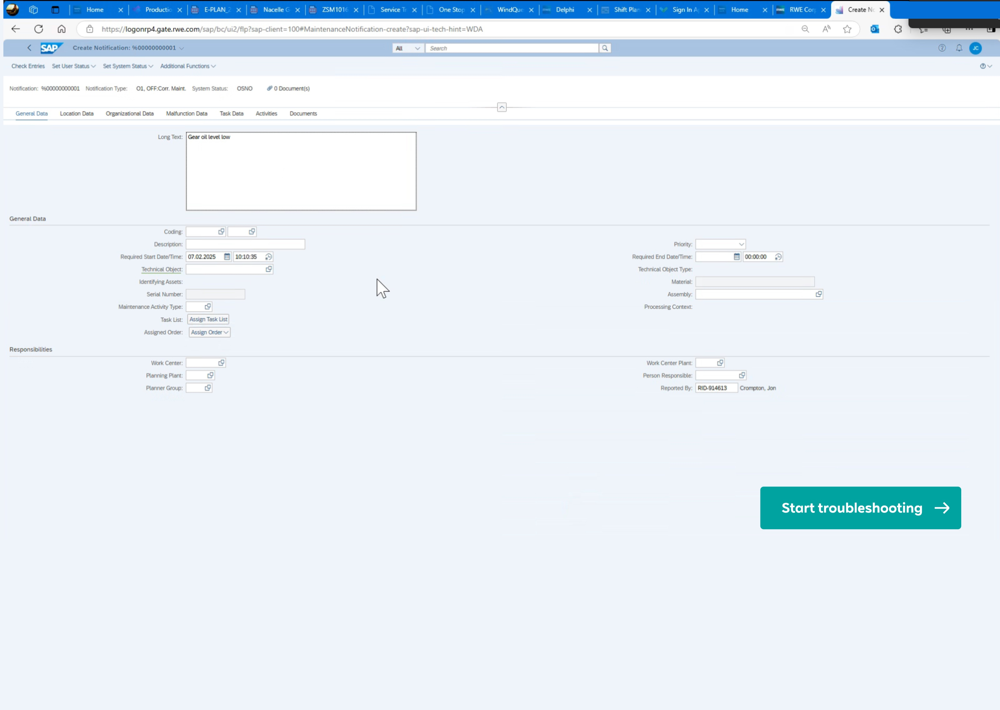
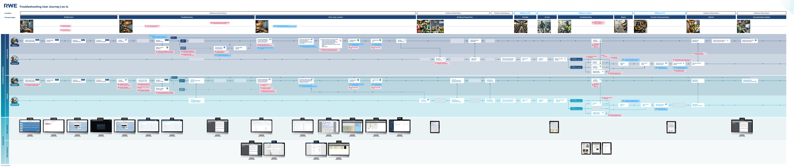
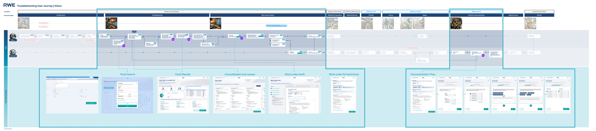
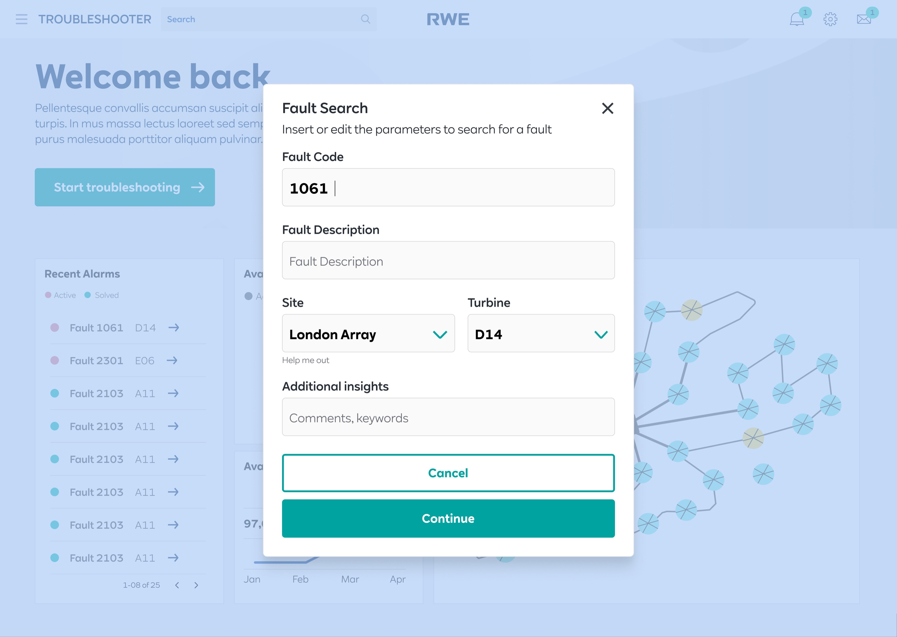
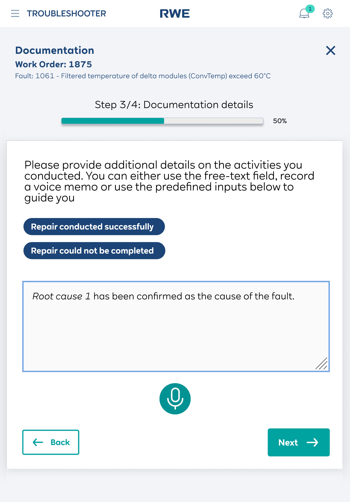

RWE’s offshore wind technicians diagnosed turbine faults across 7 steps and 4 disconnected systems (SAP, PDFs, phone calls, tribal knowledge). As the sole UI/UX designer, I designed a unified troubleshooting platform that consolidates this into 3 steps within a single tool — with cross-site fault search, consolidated root cause comparison, and an integrated iPad documentation flow for offshore technicians. Delivered 15+ production-ready screens across 2 modules, aligned 11+ stakeholders in 3 review cycles, and handed off a prototype now in active development.
A global wind fleet with no dedicated troubleshooting tool
RWE operates one of the world’s largest offshore wind fleets. When a turbine faults, maintenance teams need to diagnose the issue, find root causes, and create work orders — often under time pressure.
The problem: there was no dedicated troubleshooting tool. Teams relied on SAP transaction codes, scattered PDF manuals, and the tribal knowledge of experienced technicians. Information was siloed by site, hard to find, and impossible to standardize.

What I owned
End-to-end design
Research, journey mapping, IA definition, wireframing, prototyping, and interaction specs.
Stakeholder alignment
Facilitated design reviews with 11+ stakeholders across Business Partners, Product Owners, and Team Leads.
Two distinct roles, two different contexts
Mapping the as-is journey revealed deep structural gaps
I conducted contextual shadowing sessions in control rooms, observing coordinators handle real fault scenarios. The critical insight: the most valuable research came from watching, not asking. I saw the hidden workarounds — sticky notes on monitors, WhatsApp groups for advice, and informal knowledge networks.
Dedicated digital tools for troubleshooting — teams relied on SAP/PDFs.
Disconnected systems touched during a single fault resolution.
Knowledge loss risk when experienced staff retired or transferred.

Four fault scenarios, two product modules
Known fault — own site
Resolution is documented locally. Challenge is finding it quickly.
Known fault — other site
Highest impact area. Knowledge doesn’t currently travel between sites.
Module 1: Desktop
Fault search, cross-site lookup, and work order drafting for Coordinators.
Module 2: iPad
Structured capture of repairs and photos for Technicians on-site.
How I structured the work
Research & Shadowing
Conducted interviews and contextual shadowing sessions in control rooms.
Vision Journey & IA
Defined the target-state journey and designed the Information Architecture around two modules.
Prototyping & Handoff
Designed 15+ screens in Figma, handled stakeholder reviews, and delivered annotated interaction specs.
The redesigned journey

A structured troubleshooting platform


Decisions that shaped the product
Search-first Information Architecture
Tradeoff: I chose a central search bar over a nested folder navigation. Coordinators arrive with a specific SCADA alarm code; they are hunting, not exploring. Zero clicks to start the search saves critical time.
Offline-first iPad Architecture
Context: Discovered during shadowing that offshore connectivity is terrible. Designed the iPad flow to cache inputs and photos locally with persistent sync indicators, rather than failing gracefully.
Impact in 12 weeks
Steps to resolution
Screens shipped
Cross-site tools created
Interested in working together?
I’m looking for product design roles in B2B SaaS, enterprise, or energy. Based in India, open to remote.